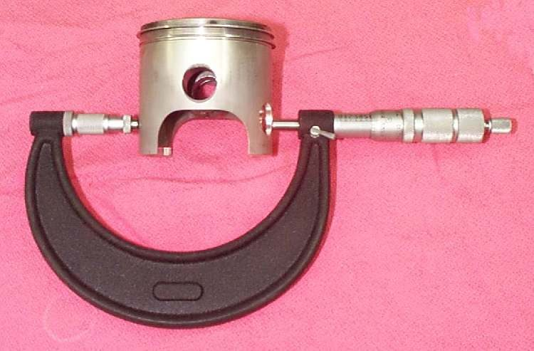
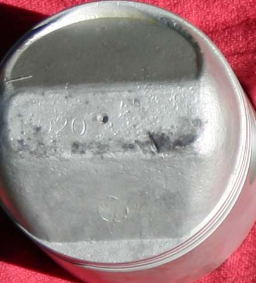
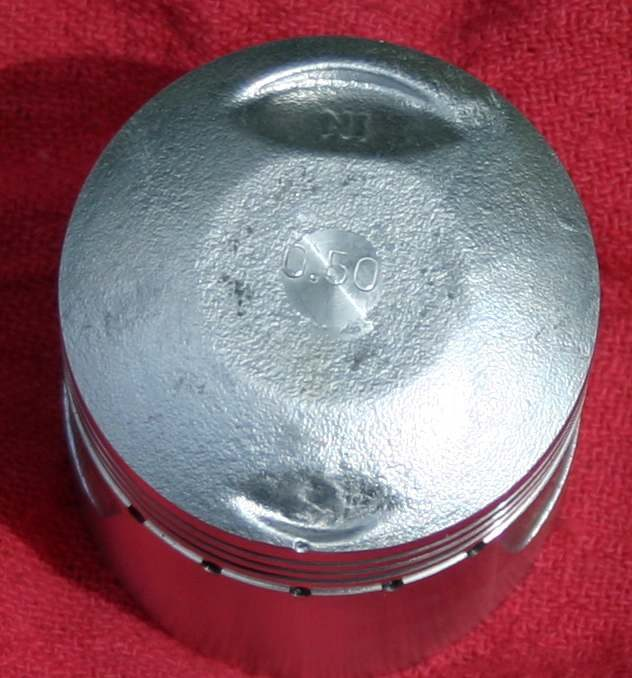
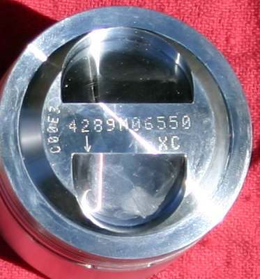
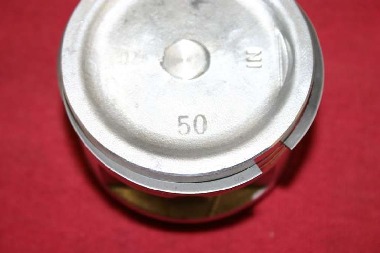

When the head is off, the piston and bore show how worn the engine is and whether new rings alone will help. This page covers what to look at on the piston, how to read its size marks and what to measure before ordering parts.
Safety
- Put a clean rag in the crankcase opening whenever the piston is off. A dropped circlip is hard to find.
- Wear eye protection when removing or fitting circlips.
- The piston and bore can be sharp after a seizure.
You need
- An outside micrometer and a feeler gauge.
- Circlip pliers or a small screwdriver. A wrist pin puller if the pin is tight.
- Your bike's manual for piston clearance and ring groove limits.
Steps
- With the head off, push the piston sideways in the bore. There should be almost no movement. Feel the top of the bore for a ridge.
- If the piston rocks and there is a ridge, the bore is worn and will need boring to an oversize.
- Remove a circlip, then push the wrist pin out. A light tap is fine. If the pin is tight, use a puller and do not hammer.
- Look at the piston crown. A crown that looks chewed or pitted points to bearing damage below: see Piston crown is chewed, pitted or melted.
- Look at the skirt for scuffed or smeared patches and at the ring grooves for wear or broken lands.
- Measure the piston with a micrometer across the skirt at the height given in your manual. Take the reading at right angles to the pin.
- Measure the bore in several places (Measure piston-to-cylinder clearance and bore wear). Subtract the piston diameter from the largest bore reading to get the clearance.
- Compare with the manual. Clearance varies with piston size, material, cooling and engine type, so use only the value for your engine.
- If reusing the piston, check ring side clearance with a feeler gauge, with each ring in its groove. If it is over the limit even with new rings, replace the piston.
- Read the size mark on the piston: oversizes are stamped in inches or millimetres and factory steps are usually 0.25 mm. Some marks are printed in ink and wear off. A code number may also give the ring type. Always measure the old piston before ordering.
- Check the circlip type. Most small bike pistons use a plain wire circlip. Circlips are not interchangeable between types. Use the type the piston maker lists.
Check your work
- Piston clearance is within the manual limit.
- The ring grooves are not worn beyond the limit.
- The pin slides in smoothly and the circlips seat fully in their grooves.
When to go to a workshop
- Clearance is over the limit, or the bore is scored, oval or ridged. Boring and a new piston are needed.
- The bore looks blue or burnt. A burnt cylinder can smoke even after a rebuild. A new cylinder or liner is the cure.
- The piston crown is chewed, which means bottom end bearing damage.